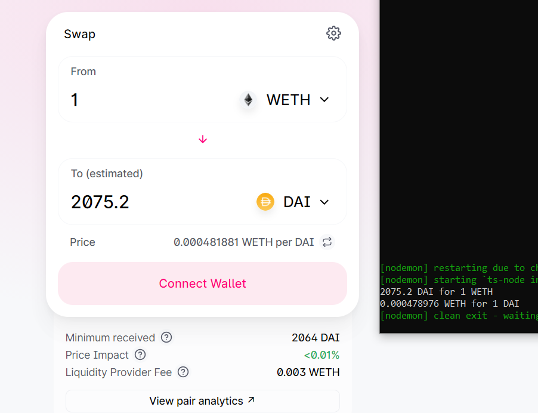
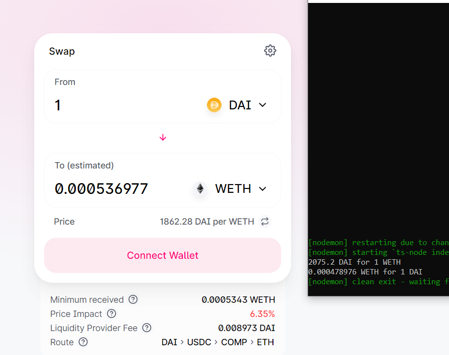
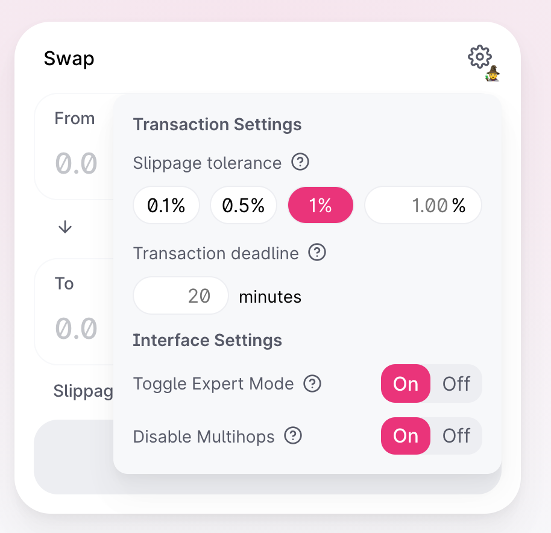

Fetch proper execution price from Uniswap V2
I'm trying to undertand Uniswap v2 SDK. I've written simple function, to fetch result of trading:
- 1 WETH for Dai
- 1 DAI for WETH
My question is, why the first trade result is really accurate with what Uniswap Interface is returning, but the second trade is not even close to the one availabile in the web interface?
Code:
import { ChainId, Token, Fetcher, Route, TradeType, TokenAmount, Trade } from '@uniswap/sdk' const DAI = new Token(ChainId.MAINNET, '0x6B175474E89094C44Da98b954EedeAC495271d0F', 18) const WETH = new Token(ChainId.MAINNET, '0xC02aaA39b223FE8D0A0e5C4F27eAD9083C756Cc2', 18) const fetch = async () => { const pair = await Fetcher.fetchPairData(DAI, WETH) const routeWethForDai = new Route([pair], WETH); const tradeWethForDai = new Trade(routeWethForDai, new TokenAmount(WETH, BigInt(1E18)), TradeType.EXACT_INPUT); const routeDaiForWeth = new Route([pair], DAI); const tradeDaiForWeth = new Trade(routeDaiForWeth, new TokenAmount(DAI, BigInt(1E18)), TradeType.EXACT_INPUT); console.log(tradeWethForDai.executionPrice.toSignificant(6) + " DAI for 1 WETH") console.log(tradeDaiForWeth.executionPrice.toSignificant(6) + " WETH for 1 DAI") }; fetch()


Answer
For some reason the Uniswap UI is showing the route DAI > USDC > COMP > ETH in your screenshot. The price impact there is 6.35%, slippage would be huge if the swap was executed that way. There is a ETH/DAI pool, so it's best to swap directly without any other tokens in the path. You can enforce this on the Uniswap UI by clicking on the cogwheel an turning on "Disable Multihops":
